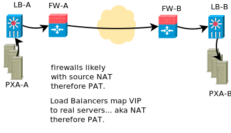

Pourquoi SFTP est plus souvent choisi que FTPS
Il y a eu des discussions sur l’endroit où placer un S afin de transferts de fichiers sécurisés. Parmi une variété de technologies concurrentes, il y en a deux qui peuvent sembler assez équivalents : SFTP et FTPS. Les deux technologies sont des candidates pour remplacer la vénérable méthode FTP de transfert de fichiers.
Il est pertinent d’examiner les raisons pour lesquelles SFTP a été choisi à la place de FTPS. Dans cette discussion, veuillez garder à l’esprit :
Je ne suis pas un expert en sécurité, cela reflète simplement ma compréhension actuelle
Nous n’avons pas déployé FTPS, nous avons donc peu d’expérience avec cela.
S’il y a des malentendus, alors nous serions heureux d’apprendre à leur sujet.
FTP
Dans les premiers jours d’Internet, avant même l’avènement du World Wide Web, l’une des premières applications était un transfert de fichiers, tel que défini pour la première fois par Internet Engineering Task Force standard Request for Comments (IETF RFC 114 d’origine, datant de 1971 ). Il a évolué au cours des décennies suivantes avec les mêmes idées de base. Sur Internet, tous les appareils ont une adresse internet, et pour chaque adresse il y a de l’ordre de 65 000 ports disponibles (type de sous-adresses).
Si Alice veut communiquer avec Bob, elle initie une connexion à l’appareil de Bob sur le port 21. Bob indique qu’il est prêt à recevoir le dossier, puis ils se mettent d’accord sur une seconde connexion établie sur laquelle les données du fichier sont réellement établies. La façon dont la deuxième connexion est établie a beaucoup varié au fil du temps. Les informations pour configurer le chemin de données naturellement passe sur le chemin de contrôle précédemment configuré.
À cette époque, Alice et Bob avaient deux serveurs. directement sur internet. Internet était un lieu collégial, et les firewall n’existaient pas. Trente ans plus tard, et la réalité est tout à fait différent.
Échangeurs de produits : prise en charge d’un grand nombre de transferts
Dans les temps modernes, si l’on transfère des centaines de milliers ou des millions de fichiers, il y aura probablement un grand nombre d’appareils de réseau entre les serveurs d’Alice et bob. Le diagramme suivant est un diagramme typique d’un cas simple que l’on est susceptible de rencontrer dans la réalité:
Pour envoyer un grand nombre de fichiers et résister aux défaillances de serveurs individuels, il y aura généralement un tableau de serveurs pour envoyer des fichiers. Appelons-les un tableau d’échange de produits. Le but de ces tableaux de serveurs est de traiter et/ou transférer plus de données que ce qui pourrait être transféré dans un temps donné par un seul serveur, et pour fournir une redondance transparente pour les défaillances de composants.
Pour faire paraître aux étrangers qu’un serveur est unique, il y aura un équilibreur de charge devant les vrais serveurs. Lors de la connexion initiale ou la réception de connexions entrantes, l’équilibreur de charge mappera les adresses réelles des serveurs réels à un serveur public. L’équilibreur de charge maintient une table des personnes connectées à qui, de sorte que lorsqu’un paquet est reçu d’un serveur externe, peut le mapper au bon serveur réel. C’est ce qu’on appelle la traduction d’adresses réseau, ou NAT.
Rappelons qu’il y a 65 000 ports disponibles, donc plusieurs serveurs pourraient choisir, à partir de leurs adresses réelles, d’utiliser la même source pour initier leur connexion. Lorsque l’équilibreur de charge mappe la connexion à une adresse visible publiquement, vous pouvez avoir plusieurs serveurs revendiquant le même port de source. L’équilibreur de charge doit donc mapper les ports ainsi que les adresses. C’est ce qu’on appelle la traduction d’adresse de port, ou PAT.
Il y a donc une table stockée d’une manière ou d’une autre (sur les appareils haut de gamme) dans la mémoire adressable de contenu, ou CAM)
10.2.3.4:67 |
134.67.7.8:45 |
Qui maintient le mappage d’une adresse et d’un port à une adresse et un port public pour chaque connexion traversant un appareil donné.
Lorsque nous arrivons à un firewall, en particulier lorsque les organisations utilisent un adressage privé, le processus est répété. Donc l’adresse et le port peuvent être à nouveau re-mappé à des différents.
Les mêmes opérations se produisent à l’autre extrémité, avec le firewall et l’équilibreur de charge qui gère les tables des personnes connectées à quoi, et mappe des adresses et des numéros de port dans l’ordre pour permettre aux serveurs à chaque extrémité de communiquer.
Avec un protocole simple, comme Secure Shell ou Hypertext Protocole de transfert, il n’y a qu’un seul canal et une seul entrée de table dans chacun de ces périphériques qui est nécessaire par connexion. La complexité algorithmique de telles opérations est constante et minime, et petite en termes de mémoire et de processeur.
Rappelez-vous que le chemin de contrôle indique la méthode par laquelle la connexion de données est établie. Afin que le canal de données FTP connecte les deux serveurs, chaque firewall ou équilibreur de charge entre les deux serveurs observe le chemin de contrôle, recherche la spécification du port de données, et crée de manière proactive une cartographie pour cela, créant une deuxième paire de relations à gérer dans le tableau pour chaque connexion. Cette activité est appelée proxy FTP. Un proxy doit être exécuté à n’importe quel point où la traduction du réseau ou du port se produit, avec au moins le double de la surcharge de mémoire (encore petite) que d’autres protocoles, mais le travail du processeur est à peu près le même (il suffit d’utiliser deux entrées dans les tables de mappage au lieu d’une). De manière optimale, une sorte de proxy ou observateur sur les firewall est capable d’ajuster les règles de firewall dynamiquement pour n’autoriser que des connexions de données spécifiques en cours d’utilisation quand ils en ont besoin, minimisant l’exposition à internet pour ne doubler que celle des autres protocoles.
En pratique, il peut y avoir de nombreux firewall NAT/PAT entre A et B, et ni Alice ni Bob ne seront en charge de la configuration de tous les dispositifs intervenants. Parce que le chemin d’accès du contrôle FTP est facilement inspecté, il y a juste un peu de code proxy couramment mis en œuvre sur les périphériques réseau pour couvrir ce cas particulier.
FTPS
FTPS - est FTP avec la sécurité de niveau de transport ajoutée. Le chemin de contrôle est maintenant chiffré et n’est donc pas disponible aux proxys sur chacun des firewall et équilibreurs de charge (tels que LVS (serveur virtuel linux), ou produits standard de F5, barracuda ou d’autres). La réponse simple à ce problème est de mettre fin au chiffrement de chaque firewall et équilibreur de charge, de sorte que le trafic de contrôle peut être visualisé pour obtenir les numéros de port nécessaires, puis rechiffré. Essentiellement, il faudrait décrypter et rechiffrer les informations de contrôle au moins quatre fois entre les serveurs source et destination.
Idéalement, on ne déchiffrerait que le chemin de contrôle, le routeur intercepterait la demande de connexion et renvoie une réponse de chiffrement local. Mais si le chemin de données n’est pas également intercepté, alors le serveur aura une clé de chiffrement pour le contrôle et une autre pour le chemin de données, qui cassera TLS. Donc, très probablement, chaque routeur et firewall intervenant est obligé de déchiffrer et de rechiffrer toutes les données qui passent aussi.
Essentiellement, cela signifie qu’Alice et Bob acceptent que chaque périphérique NAT / PAT entre eux est autorisé à usurper l’identité de l’autre entité (effectuant ce que l’on appelle une attaque de l’homme du milieu). C’est la seule façon de traverser une longue chaîne de périphériques NAT/PAT.
Comme ce qui précède est assez onéreux, ma supposition est que ceux qui déploient FTPS ne corrige pas le proxy comme décrit ci-dessus. Au lieu de cela, ils réservent une plage de ports pour ces types de trafic et mettent un PEU DE règles NAT/PAT statique en place, réservant probablement une plage de ports par nœud derrière un équilibreur de charge. C’est lourd et difficile à gérer, et cela fonctionne pour un niveau profond, mais il ne se généralise pas. En outre, la réservation de ports augmente la superficie d’une attaque contre des étrangers, car les ports sont ouverts en permanence, plutôt que d’avoir un mappage de ports spécifiques à des moments spécifiques, car le firewall ne peux pas lire le trafic du chemin de contrôle.
Dans le cas actif d’origine de FTPS, le client initie le contrôle et le serveur initie la connexion de données, nécessitant le firewall du client pour autoriser une connexion entrante arbitraire. Cette méthode est essentiellement limité au fonctionnement où il n’y a pas de NAT du tout, et du firewalling extrêmement limité dans les deux sens pour qu’un transfert ait meme lieu.
Le cas passif, où le client initie à la fois le contrôle et les données de connexions, est beaucoup plus commun dans les environnements modernes. Celui-là complique le NAT/PAT et l’utilisation d’équilibreurs de charge sur le côté serveur de la destination. Lors de la mise en place d’échanges bidirectionnels, FTPS complique l’utilisation par les deux parties des équilibreurs de charge ou NAT et réduit l’efficacité des mesures de firewall disponibles.
FTPS est fondamentalement plus difficile à configurer pour de nombreuses configurations courantes. Il faut construire un cluster différemment, et sans doute pire, parce que les mécanismes standard utilisés pour d’autres protocoles ne fonctionnent pas. Cela réduit une variété de choix de configuration disponibles uniquement pour prendre en charge FTPS, avec moins de protection de que ce qui est offert lors de l’utilisation d’autres protocoles.
Enfin, tous les pairs avec lesquels on échange du trafic seront confrontés à la même chose et auront du mal à le déployer. Il est rare de trouver une pair qui préfère FTPS.
Coût
Si l’on suppose que le chemin de contrôle seul peut être intercepté, en laissant le chemin des données, alors du point de vue de la complexité computationnelle, le chemin de contrôle, plutôt que de simplement passer des paquets à travers chaque périphérique NAT/PAT doit être déchiffré et rechiffré, ce qui est probablement encore petit, mais beaucoup plus important que d’autres protocoles exigent. Cela place une charge plus élevée sur les équilibreurs de charge et les firewall, qui sont plus complexes à paralléliser et généralement plus chers que les serveurs à usage général utilisés dans une baie d’échange de produits. Cet effet est plus prononcé pour les sessions courtes (principalement liées à la connexion d’établissement, plutôt que de transfert durable).
En réalité, il est plus probable que les données doivent également être rechiffrées comme chemin de contrôle, dans ce cas la capacité de chiffrement de plusieurs serveurs doivent être égalés au périphérique du réseau pour éviter la formation d’un bottleneck. Le but d’un tableau d’échange de produits est de distribuer la charge de calcul sur une variété de serveurs à faible coût. La puissance de traitement dans les serveurs de commodité est de plusieurs ordres de grandeur au-delà de ce qui est disponible pour les périphériques réseau. Dans le cas du déchargement du chiffrement, la charge imposée sur les périphériques réseau sont exponentiellement plus élevés que ce qui est requis pour d’autres protocoles.
Les fournisseurs d’équipements réseau peuvent vanter le déchargement du cryptage, mais ce que cela représente dans la pratique, est de décharger le travail du processeur à partir d’un éventail de serveurs redondants, à une grande boîte relativement chère et propriétaire.
On peut éviter le coût du cryptage et du décryptage sur les périphériques réseau en limitant toute la configuration à être placée dans un DMZ sans équilibreur de charge, ou un équilibreur de charge avec des mappages de ports statiques par serveur réel et une protection de firewall inférieur. Dans ce cas, le coût de l’équipement n’est probablement pas différent, mais la charge de maintenance sera légèrement plus lourde (informations d’identification plus fréquentes), mises à jour, besoin de maintenir des cartes statiques supplémentaires, plus de surveillance de firewall).
Fonctionnalité: Plages d’octets
En plus de la complexité beaucoup plus grande de la prise en charge du firewall pour FTPS, et la charge supplémentaire sur les firewall coûteux, il y a également uen fonctionnalité réduite disponible par rapport aux protocoles plus récents, tels que le protocole de transfert SSH et HTTP(S). Les deux sont sécurisés en utilisant les mêmes algorithmes de chiffrement que FTPS, mais sont à canal unique, et ils offrent tous deux la possibilité de récupérer des plages d’octets dans les fichiers. Certaines technologies de transfert plus récentes utilisent des plages d’octets fournies par HTTP et SFTP pour permettre le transfert de fichiers par plusieurs flux parallèles, ce qui n’est pas possible avec FTP ou FTPS.
Sécurité/Vulnérabilité
FTPS, comme FTP, est généralement authentifié à l’aide de mots de passe secrets. Si la pair dans un échange subit une intrusion, le hachage du mot de passe peut être utilisé pour obtenir le mot de passe lui-même en utilisant ce que l’on appelle la méthode brute de force dans un délai raisonnable en raison de sa complexité limité. La plupart des mots de passe sont beaucoup plus courts que les clés typiques de SSH.
On est également confronté au problème de l’interception du secret lorsqu’il est partagé. Ce problème est aggravé par les normes de sécurité modernes qui forcent le changement de ces secrets à des intervalles fréquentes, augmentant l’opportunité de l’interception, ainsi que pour imposer une charge de travail supplémentaire au personnel pour l’entretien.
Il existe des configurations où les mots de passe sont autorisés avec SSH/SFTP, mais pour des applications de transfert de données ces options sont systématiquement désactivées, ce qui est possible de manière propre et simple. Habituellement, l’échange de données implique l’échange de clés publiques (aucun secret n’a besoin d’être échangé.) Les clés publiques sont plus fortes que les mots de passe, et la plupart des organisations de sécurité permettent des intervalles beaucoup plus longues avant qu’un changement d’informations d’identification ne soit requis.
Avec SSH, si un serveur distant est compromis, la partie malveillante obtient uniquement la clé publique. Comme elle est déjà public, l’attaquant n’a rien gagné de valeur. Comme les touches sont beaucoup plus longues qu’un mot de passe, le trafic est plus susceptible d’être sécurisé en transit (bien que dans la pratique, il existe de nombreux détails qui peuvent rendre ce point discutable.)
Selon IETF RFC 2228, les serveurs FTPS peuvent être des serveurs FTP avec plus de sécurité disponible sur demande explicite, appelée le mode explicite. Il est donc possible de se connecter à des serveurs FTPS et de transférer en FTP (mode non sécurisé). Une configuration minutieuse des serveurs est nécessaire pour s’assurer que cela n’est pas permis par inadvertance.
Sur les systèmes récepteurs, il est vrai qu’une configuration OpenSSH par défaut permet l’accès au niveau du shell, mais l’utilisation restreinte de shells et de prisons chroot est courante dans les configurations FTP et SFTP. Il n’y a pas de pratique différente entre FTPS et SFTP du point de vue du compte serveur.
En termes de firewall, en supposant que la méthode de mappage de port statique est utilisée, alors une attaque relativement simple sur un serveur FTPS avec ce type de configuration serait de DDOS les ports de données. En supposant la capacité de surveiller le trafic à un point entre les points d’extrémité, un malfaiteur pourrait déterminer la plage de ports mappé, puis envoyer constamment du trafic vers les ports de données avec des données incorrecte, ou pour fermer immédiatement la connexion empêchant le transfert de données réel. Il s’agit d’une surface supplémentaire à défendre par rapport à d’autres protocoles.
L’utilisation du deuxième port chiffré, où la plage de ports utilisée est variable d’un site à l’autre, signifie que la plupart des firewall normaux fonctionnant au niveau TCP distinguera moins facilement le trafic de transfert de fichiers du trafic Web ou autre car il n’y a pas de numéro de port spécifique impliqué. Par exemple, notez ce rapport de bug du point de contrôle qui dit que pour permettre à FTPS de le traverser, il faut désactiver diverses vérifications:
"FTP over SSL is not supported.
Since FTP over SSL is encrypted, there is no way to inspect the port command
to decide what port to open and therefore the traffic is blocked. ...
If you still cannot get this traffic through the gateway, there are several
ways to disable FTP enforcement. Usually this is done through SmartDefense/IPS,
by disabling the FTP Bounce attack protection.
Note that this is NOT recommended. [*]_
Fiabilité/Complexité
Il existe plusieurs modes de FTP: ascii / binaire, actif / passif, qui créent plus de cas. FTPS ajoute plus de cas: explicite / implicite au nombre à autoriser. Le cryptage peut être activé et désactivé à différents points de chemins de contrôle et de données.
Exemple du mode causant une complexité supplémentaire : actif ou passif ? Problème très courant. Oui, la question peut être répondu en pratique, mais il faut se demander: pourquoi faut-il répondre à cette question? Aucun autre protocole en a besoin.
Exemple de mode causant de la complexité d’il y a dix ans: un serveur FTP commun sur les systèmes Linux est défini par défaut, ignorez le paramètre ‘ascii’ sur les sessions ftp pour des raisons de performances. Il a fallu beaucoup de temps pour comprendre pourquoi l’acquisition de données à partir de machines VAX/VMS échouait.
L’exigence inhérente pour tous les périphériques NAT/PAT intervenants d’être configurés juste ainsi pour prendre en charge FTPS le rend, en pratique, moins susceptible d’être fiable. Même dans les cas où tout est correctement configuré, il y a de la place pour les difficultés. Rappel que pour FTP et FTPS, les tables doivent être maintenues pour associer les connexions de contrôle et de données aux points de terminaison corrects. Lorsque les connexions sont fermées, les entrées doivent être arrêtées.
Exemple de configuration correcte ayant encore des problèmes: selon notre expérience, très rarement, les tables de mappage se confondes. Dans le réseau principal canadien d’échange de produits de données météorologiques, parfois, un fichier sur plusieurs millions, le nom du fichier ne correspondrait pas au contenu du fichier. Bien que ni le nom du fichier, ni le contenu n’aient été corrompus, l’ensemble de données ne correspondait pas au nom donné au fichier. De nombreuses sources possibles ont été examinées, mais les sources suspectées de la cause était une sorte de problème de synchronisation avec les ports réutilisés et le mappage sur les équilibreurs de charge, où le nom de fichier circule sur le chemin de contrôle et les données circulent sur l’autre port. À titre de test, les transferts ont été migrés vers SFTP et les symptômes ont disparu.
Résumé
Soit le proxy FTPS est effectué de manière entièrement générale :
les dispositifs intervenants doivent effectuer un décryptage de l’homme du milieu sur au moins le chemin de contrôle, ce qui est tout à fait indésirable d’une perspective de sécurité. Le déchiffrement du seul chemin de contrôle n’est probablement pas possible sans casser TLS, de sorte que l’ensemble du flux de données doit être déchiffré et rechiffré à chaque firewall ou équilibreur de charge.
FTPS nécessite une configuration complexe de tous les périphériques intervenants qui sont courants dans les configurations modernes. Dans de nombreux cas, les propriétaires des appareils intervenants refuseront de soutenir la technologie.
FTPS impose une charge de calcul plus élevée à tous les intervenants que la plupart des alternatives disponibles. En imposant une charge accrue sur les appareils spécialisés, il est généralement plus coûteux à déployer à grande échelle.
Étant donné que ce qui précède est peu pratique et indésirable, il est rarement fait. Il existe donc des situations banales où l’on ne peut tout simplement pas déployer le protocole.
Ou, si seul le mappage de port statique est effectué :
Les configurations de firewall FTPS habituelles laissent une plus grande surface d’attaque pour les malfaiteurs parce que le manque de visibilité sur le chemin de contrôle force le firewall à ouvrir plus de ports que ce qui est strictement nécessaire, augmentant la surface d’attaque.
Le mappage de port de données statique par serveur réel sur les équilibreurs de charge est plus complexe à maintenir que ce qui est requis pour d’autres protocoles.
Dans les deux cas :
On utilise généralement des mots de passe, qui ont tendance à être de longueur limitée, réduisant la sécurité globale par rapport à SSH/SFTP où l’utilisation de longues paires de clés publiques/privées est monnaie courante, et l’allongement de l’exigence de longueur de clé est simple.
FTPS ne prend pas en charge les plages d’octets qui sont utiles dans certaines applications, et est pris en charge par SFTP et HTTP (avec ou sans (S)).
En cas d’un serveur distant compromis, le mot de passe du compte est facile à déterminer. Alors que la meilleure pratique signifierait que ce mot de passe est de peu ou aucune valeur, certaines mauvaises habitudes, telles que la réutilisation du mot de passe, peuvent signifier que le mot de passe a une certaine valeur. Contraste avec SFTP: seules des informations déjà publiques sont divulguées.
Certains logiciels de serveur FTPS ont des mécanismes et des options de secours qui peuvent causer des utilisateurs ou administrateurs à envoyer involontairement des informations non chiffrées. Cela pourrait entraîner la révélation de mots de passe. Dans SFTP, les mots de passe sont généralement non envoyé, les clés sont un élément de cryptage, il n’y a donc pas de mots de passe pour intercepter.
FTPS est intrinsèquement plus complexe, ce qui le rend plus difficile à déployer et à exploiter.
Les limites des configurations prises en charge limitent les approches de firewall, réduisant probablement la protection offerte aux serveurs internet.
Contrairement à FTPS, SFTP :
parcourra n’importe quel nombre de points NAT/PAT sur un réseau intermédiaire sans difficulté.
fonctionne derrière tout type d’équilibreurs de charge, ce qui simplifie la mise à l’échelle des tableaux d’échange de produits.
n’exige aucune partie intervenante pour déchiffrer quoi que ce soit.
met moins de charge (à la fois cpu et mémoire) sur les périphériques réseau intermédiaires.
a des méthodes courantes similaires pour sécuriser les comptes sur les serveurs (par exemple, des shells restreints dans les prisons chroot).
prend en charge les plages d’octets, qui sont utiles.
est plus simple, avec moins d’options, donc plus fiable.
est plus simple à surveiller et à firewaller, et permet des configurations de firewall plus limitées.
est beaucoup plus courant (par exemple, Microsoft annonçant le support intégré dans une prochaine version de Windows [*] ).
utilise normalement des paires de clés publiques / privées, qui sont généralement considérées comme plus fortes que les mots de passe.
ne nécessite aucun secret partagé (ou un mécanisme pour les envoyer), et généralement les informations d’identification doivent être remplacées moins souvent.